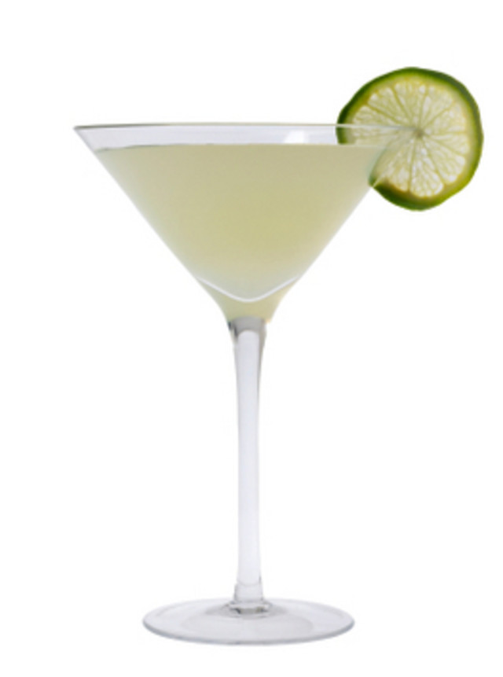

칵테일
보드카
진
럼
리큐르
무색 투명한 술로 주니퍼 베리 등 방향성 물질을 넣어 증류시킨
Martini - Base 2oz Vermouth 10ml
Gimlet - Base 1.5oz Lime 0.5oz sugar 1tsp

Gin Fizz - Base 1.5oz Lemon 1oz sugar syrup 10ml sparkling water
White Lady - Base 1oz Cointreau 0.5oz Lemon 0.5oz